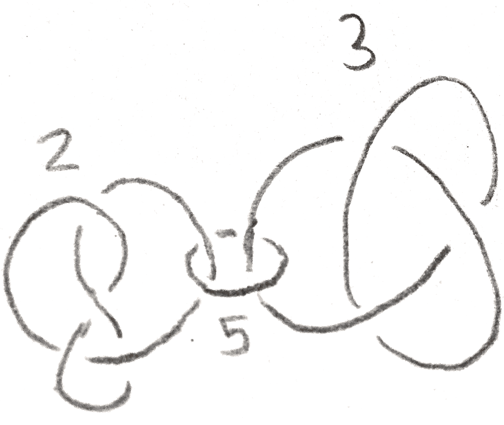

We can view the construction of the lens spaces \(L(p,q)\) as follows: we first remove a neighborhood of a standard circle in \(S^3\), and reattaching the neighborhood by a certain diffeomorphism of the torus, which here is specified by \(p\) and \(q\). This process is called rational Dehn surgery. If the meridian of the removed torus is sent to some longitude on the complement, it is called integral Dehn surgery. These notions make sense in an arbitrary \(3\)-manifold, but if the \(3\)-manifold is \(S^3\), we can assign a rational number to rational surgery and an integer to integral surgery. To do this note that on the boundary of the neighborhood of the circle, there is a canonical longitude, namely the one that is trivial in homology of the complement of the circle. Then the rational surgery \(\frac p q\) is given by sending the meridian of the removed solid torus to \(q\) times the longitude plus \(p\) times the meridian. If \(q = 1\), then indeed the surgery sends the meridian to a longitude, and is given by an integer.
More generally, given a link in a \(3\)-manifold, we can do rational surgery on it as described above, which is clearly well defined up to isotopy.
In fact any (orientable closed) \(3\)-manifold can come from integral surgery on any other. This follows from a hard to prove theorem about mapping class groups of tori. Namely, recall that the Dehn twists generated \(\SL _2(Z)\) in homology, and hence as we saw generate the orientated mapping class group of the torus. This is true for higher genus surfaces:
Theorem 1.1. Dehn twists on the circles shown below on the genus \(g\) surface generate the mapping class group of the surface.
Thus given two Heegaard splittings of the same genus, we can do Dehn twists along these circles to move between them. However, changing the attaching map of a genus \(g\) handlebody by a Dehn twist on a circle amounts to doing integral surgery on that circle. To see this, take a neighborhood of the circle \(\gamma \), translate the circle to a \(\gamma '\) that is on the boundary of this neighborhood, and reglue in the neighborhood such that the meridian is sent to the meridian plus this longitude. This does nothing to each of the handlebodies, but clearly changes the gluing map by a Dehn twist as shown in Figure 2.
There is a \(4\)-manifold picture of what is happening in integral Dehn surgery. Namely, it gives an oriented cobordism between the old and new \(3\)-manifolds \(M, M'\) as follows: start with the product \(M\times [0,1]\), and we can attach a \(2\)-handle to the part of the boundary \(M \times 1\) that will yield \(M'\) as follows: we have \(\partial (D^2\times D^2) = S^1 \times D^2 \cup _{S^1\times S^1} D^2\times S^1\). We attach \(D^2\times S^1\) to the neighborhood of the circle we are doing surgery on, sending the standard longitude of \(D^2\times S^1\) to a longitude \(l\). Then this \(D^2\times S^1\) is no longer part of the boundary of the resulting \(4\)-manifold, but rather \(S^1\times D^2\) is, and it is attached to the rest of the \(3\)-manifold boundary along its boundary \(S^1\times S^1\) by sending its meridian to \(l\).
Since Dehn twists generate the mapping class group, we can start with a Heegaard splitting of \(S^3\) of high enough genus, and do enough integral surgeries on it to get any \(3\)-manifold. \(S^3\) bounds \(D^4\), so we get the following theorem:
Theorem 2.1. Every \(3\)-manifold can be constructed by doing integral surgery on a link in \(S^3\). Moreover, doing this surgery gives an oriented cobordism to \(0\) via a simply connected \(4\)-manifold.
Thus we can represent a \(3\)-manifold by a framed link, which is a link where every component has an integer attached to it. The integer specifies what kind of integral surgery it is. If we draw the link, it is called a Kirby diagram. The link specifies how to attach \(2\)-handles to \(D^4\) to get a \(4\)-manifold with boundary the \(3\)-manifold. More generally we can have rationally framed knots, but these don’t represent \(4\)-manifolds, only \(3\)-manifolds. We can also attach \(1\)-handles, which can be drawn as a pair of balls, where we remember whether the orientations on the two components agree or don’t.
For example, a rational framing of the lens space \(L(p,q)\) is given by the following:
To turn this (or any rationally framed link) into an integrally framed link, we can use the fact that the following operation on Kirby diagrams preserves the \(3\)-manifold represented:

To see this, note that after doing \(k\) surgery on the larger knot, the longitude of the neighborhood of that knot is sent to the meridian. Thus our \(\frac p q\) framed unknot can be slid into the surged torus so that it lies at the center of the torus. Then we can make the neighborhood of the unknot be exactly the torus that was surged in, so that doing the surgery only changes the attaching map. To see how it changes the attaching map, note that since \(\frac p q\) surgery specifies the attaching map from the exterior to the torus, we need to put in a \(\begin{bmatrix} 0 & 1\\ 1 & 0 \end{bmatrix}\) to account for the fact that we are changing the attaching map from the interior to the exterior. We compute the new attaching map as: \[ \begin{bmatrix} -1 & 0\\ k & 1 \end{bmatrix}\begin{bmatrix} 0 & 1\\ 1 & 0 \end{bmatrix}\begin{bmatrix} -q & \bullet \\ p & \bullet \end{bmatrix} = \begin{bmatrix} -p & \bullet \\ pk-q & \bullet \end{bmatrix} \]
We don’t really care about what the dots are, and we see that we are left with \(\frac{pk-q} p = k-\frac q p\) surgery on the knot. Thus we can inductively define a continued fraction expansion of a rational number by \([x_0] = x_0\) and \([x_0,\dots ,x_n] = x_0-\frac 1{[x_1,\dots ,x_n]}\). If \(\frac p q = [x_0,\dots x_n]\), then by induction we have the following two diagrams represent the same \(3\)-manifold:
We can construct lots of interesting examples of Seifert fibre spaces by starting with \(S^1\times S^2\), and replacing little neighborhoods \(S^1\times N\) with the standard fibred tori, which amounts to doing rational surgery. Since \(S^1\times S^2\) is obtained from \(0\) surgery on an unknot, these Seifert manifolds, denoted \(M((a_1,b_1),\dots ,(a_n,b_n))\) have the Kirby diagram shown below:
All these \(3\)-manifolds are all examples of plumbed \(3\)-manifolds, namely those that bound a plumbed \(4\)-manifold.
We say that the \(4\)-manifold associated to a Kirby a diagram is plumbed if it is given by a weighted graph, where each edge is an unknot where the weight specifies the framing, and an edge denotes that the knots are Hopf linked, like the ones in Figure 7.
We can describe the \(4\)-manifold associated to this diagram as follows: for each vertex with weight \(k\), start with the manifold \(E_n\), the disc bundle associated to a complex line bundle over \(S^2 = \CC \PP ^1\) with Euler class \(k\). Now whenever two edges \(e_1,e_2\) are connected, trivialize two neighborhoods of each of the associated disk bundles to get two copies \(D^2\times D^2\) and identify them via \((x,y)_1 = (y,x)_2\) (this identification is called a plumbing). It is easy to see that this is the same \(4\)-manifold after realizing that \(E_k\) is the manifold obtained from doing \(k\) surgery on an unknot to \(S^3 = \partial D^4\). The Seifert manifolds \(M((a_1,b_1),\dots ,(a_n,b_n))\) are all plumbed, which is seen by taking a continued fraction expansion of the \(\frac{a_i}{b_i}\) as in Figure 5. More generally, one can plumb any disk bundles of oriented surfaces, and conversely given any collection of transversely intersecting oriented surfaces in a \(4\)-manifold, a tubular neighborhood of their union will be a plumbing of their normal bundles.
We can extend our Kirby diagrams to include more \(4\)-manifolds. Namely, note that so far we can only add \(2\)-handles. To add \(1\)-handles, one can represent a framed \(S^0\) in the diagram by two balls, where we remember that they are connected, and remember if the orientation is preserved or reversed.
It is quite nice that we can represent \(3\)-manifold using Kirby diagrams, but there are a lot of basic questions we can ask about these diagrams. For example, when do two Kirby diagrams give the same manifold? There are two operations on diagrams, called the Kirby moves, that we can do that give the same \(3\)-manifold.
The first thing to note is that if the diagram has two components that are unlinked, meaning that they can be separated from each other, the manifold we get is the same as the connected sum of the corresponding manifold for each component. The first Kirby move, \(K1\), is given by adding or removing an unlinked \(\pm 1\) framed knot from the diagram, which by our realization that \(S^3\) is \(L(1,\pm 1)\) amounts to taking a connected sum with \(S^3\), giving the same manifold. Note however that the \(4\)-manifold that the \(3\)-manifold bounds is changed.
The second Kirby move, is called sliding over, and requires the notion of linking number \(L(K_1,K_2)\) of two oriented knots \(K_1, K_2\) in a homology sphere. There are several notions of linking number that are easily seen to be equivalent. The first can be seen by looking at a knot projection, taking the number of positive crossings minus the number of negative crossings that occur between the two components, and dividing by \(2\). It is clear that the linking number is symmetric and changes sign if we change the orientation of one of the knots.
The second definition is to first remove one of the knots from \(S^3\). The first homology has a canonical generator, given by the meridian (this needs the knot and \(S^3\) to be oriented). Then we can define the linking number to be the homology class that \(K_2\) represents in the complement. It is easy to see that via a projection, this coincides with the previous definition.
The third definition uses a Seifert surface, which is a (connected orientable) surface with boundary \(K_2\). It will later be seen that these always exist, but given one, we can perturb it to intersect \(K_1\) transversely, and define the linking number to be the intersection number. To see that this is the same, just note that if we remove small neighborhoods of the intersection points from the Seifert surface, we get a surface that shows that \(K_2\) is homologous to some sum of meridians.
Now that we have a notion of linking number, we can define the canonical longitude of a knot to be a parallel knot with linking number \(0\). An example is shown below:

More generally, given an integer \(n\), there is a unique longitude with homology class \(n\), and we can call this the \(n\) framed longitude.
Now the second Kirby move \(K2\), called sliding over, can be defined as follows: temporarily orient two components \(L_1,L_2\) of the knot with framings \(n_1,n_2\), take the longitude representing \(n_2\) on \(L_2\), and take the connected sum with \(L_1\). The new knot will have framing \(n_1+n_2+2L(L_1,L_2)\), which corresponds to the fact that the homology class added by the slid \(2\)-handle is the sum of the homology classes of the original \(2\)-handles. On the level of \(3\)-manifolds we can note that after having done surgery on \(L_2\), the longitude we have taken bounds a disk, so we are simply isotoping \(L_1\) inside the new surged manifold, and the change in framing makes sure that the attaching map stays the same.

These Kirby moves have interpretations in terms of the 4-manifolds that bound the three manifold. The first one amounts to attaching a \(2\)-handle that doesn’t actually change the diffeomorphism type of the boundary, alternatively taking a boundary connected sum with \(E_{\pm 1}\) which doesn’t change the boundary, and the second amounts to sliding a \(2\) handle over another as in the picture below:

Note that because we are just sliding the handle, this doesn’t actually change the \(4\)-manifold. We can find different representations of the same \(3\)-manifold via these two moves and better yet, these are guaranteed to give all the representations:
Theorem 3.1 (Kirby). Any two Kirby diagrams of the same oriented \(3\)-manifold are related through a finite number of Kirby moves.
Here are some more examples of Kirby calculus. We can use it to produce \(4\)-manifolds with boundary with any finitely presented fundamental group. Namely add \(1\)-handles for each generator, and \(2\)-handles for each relation, where the knot represents the element of the fundamental group you want to kill. By drawing any such knot, we get plenty of such \(4\)-manifolds with a given fundamental group. If for example the number of relations is equal to the number of generators, and the boundary is \(S^3\), we can add a \(4\)-handle to get something homeomorphic to \(S^4\) (by the topological \(4\)-dimensional Poincaré conjecture) but not obviously diffeomorphic to it. Plenty of potential exotic \(S^4\)s come from this. As a note, it is possible to produce closed \(4\)-manifolds with any fundamental group, by realizing it as the boundary of a \(5\)-manifold built out of \(0,1,2\)-cells.
As a second example, given a \(4\)-manifold \((M,\partial M)\) built from only a \(0\)-handle and some \(2\)-handles, we can produce a Kirby diagram of its double, i.e the manifold produced by taking two copies of \(M\) and gluing them together via the identity map on the boundary. This adds \(2\)-handles and then a \(4\)-handle to our manifold giving something closed. To find the Kirby diagram of the new manifold, we can observe that the cores of the new \(2\)-handles are attached along the cocore direction of the corresponding \(2\)-handles, so after pushing this into \(S^3\) it appears as a meridian. It framing is \(0\), as the new homology classes are represented by a sphere consisting of a cocore of a old handle and the core of a new handle, which are a trivial disk bundle on a disk that the attaching map of the cocore bounds. For example, the doubling process of a Kirby diagram is shown in Figure 14.
 
If we double a disk bundle on a sphere of Euler class \(n\), we get a \(S^2\) bundle over \(S^2\), which are classified by \(\pi _1(\Diff (S^2)) = \pi _1(SO(3)) = \ZZ /2\ZZ \). To figure out which one is which we can use Kirby calculus, Namely the double is given by two Hopf linked handles where the framing of one is \(0\) and the other is \(n\). Now by sliding the \(n\) over the \(0\), we can change \(n\) mod \(2\) to either \(0\) or \(1\). If it is \(0\), we have \(S^2 \times S^2\) (the double of the trivial disk bundle), and if it is \(1\), it is the blowup of \(\PP ^2\) at a point, i.e. \(\CC \PP ^2\# \overline{\CC \PP ^2}\). This is shown in Figure 15.